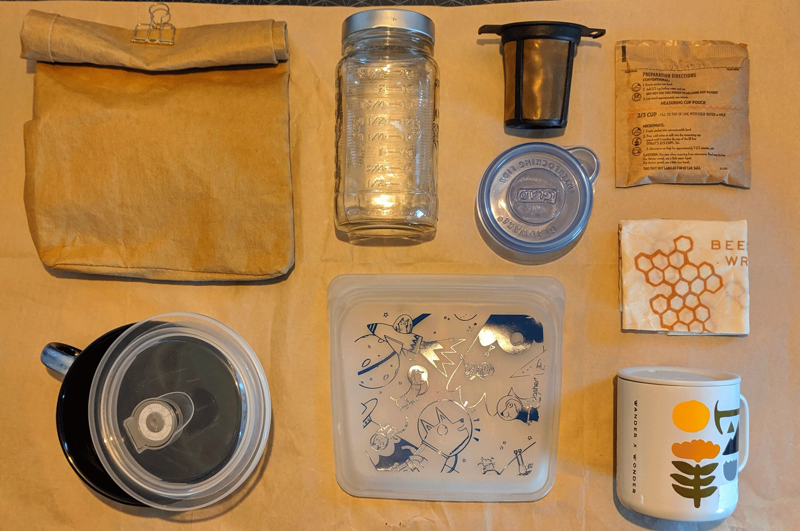

<html>
    <head>
   <link rel="stylesheet" type="text/css" href="css/solution.css">

    
    </head>
<nav>
    <ul>
        <li>
            <a href="index.html">Home</a>
        </li>
        <li>
            <a href="1950.html">1950s</a>
        </li>
        <li>
            <a href="1970.html">1970s</a>
        </li>
        <li>
            <a href="effects.html">Effects</a>
        </li>
        <li>
            <a href="2000s.html">2000s</a>
        </li>
        <li>
            <a href="solution.html"><spread class="currentpage">Solutions</spread></a>
        </li>
</nav>
<body>
        <div class="background">
            
        </div>
    <p>
        “While environmental activists tend to advocate for ditching the product altogether, manufacturers point the finger at outdated infrastructure. <br><br>
        Scott Defife, the vice president of government affairs at the Plastics Industry Association, says plastic films could be easily recycled if our infrastructure for collecting waste wasn't “lacking."<br><br>
        “We want the federal government to make investments,” he says. “They should think of it as a critical public utility like roads and bridges.” <br><br>
        <spread class="callout">It’s not about being perfect its about lifestyle changes</spread>
    </p>
    <h1>we are stuck with plastic we’ve made for the next 500 yrs</h1>
    <div class="plastic">
        
    </div>
</body>
   
</html>